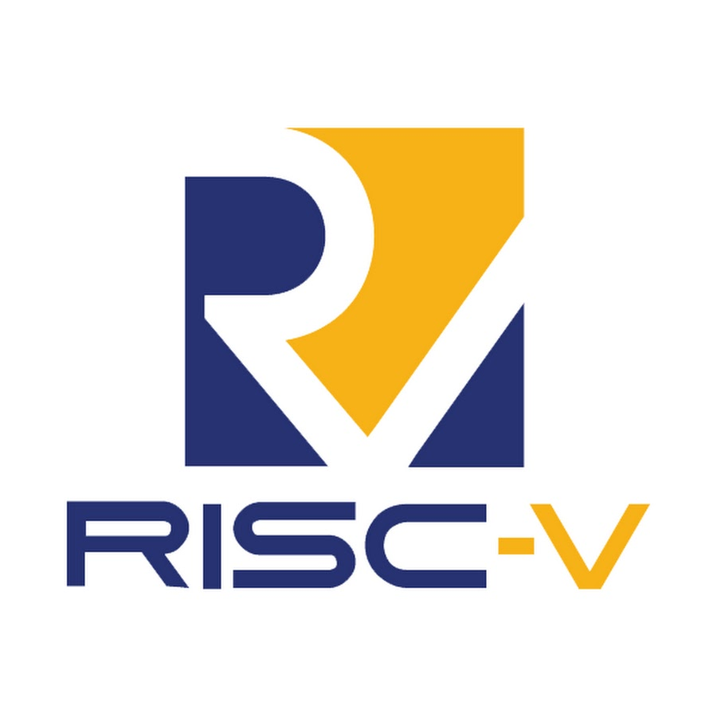
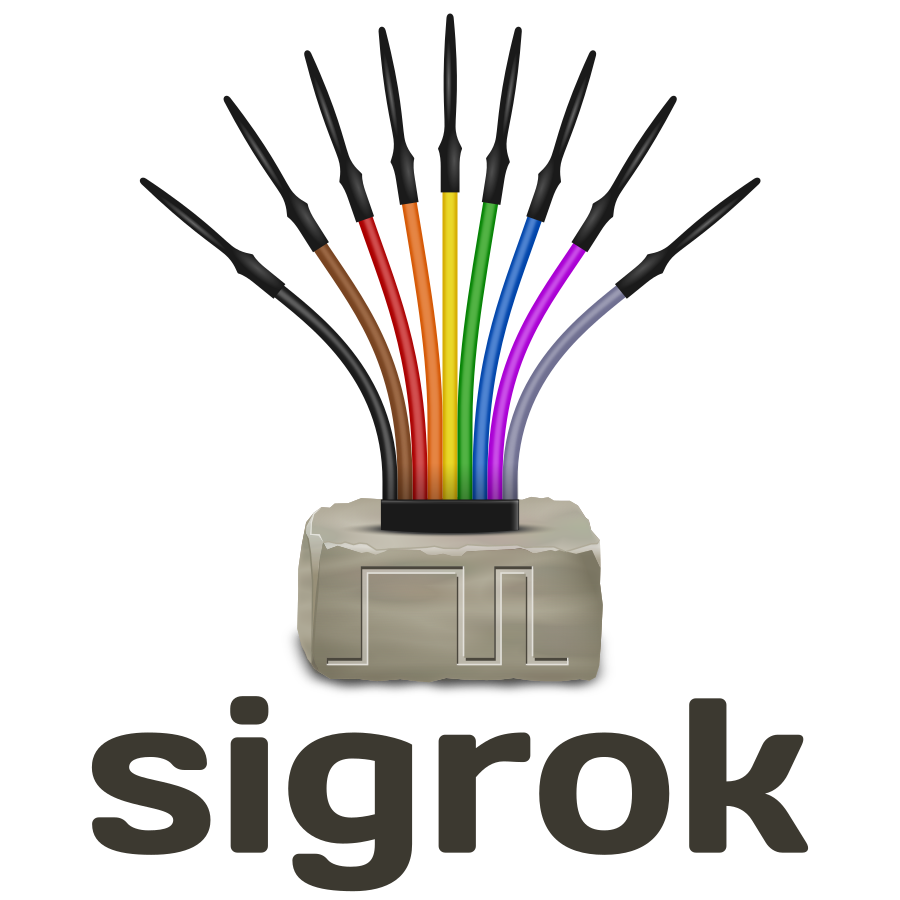

Hi I'm Jack Dietrich!
2nd year Computer Engineering student at Waterloo
Welcome to my website
About Me
About Me
Hello, My name is Jack Dietrich, current 2B Computer Engineering student at the University of Waterloo looking for a Winter 2026 co-op. I enjoy working with low level systems and mostly write code in C, C++ and ARM/x86 ASM. In the past I've worked on writing libraries for various hardware sensors such as the ADXL-345 accelerometer and BMP-180 temperature sensor. I've interfaced these sensors with the ESP32 chipset in order to make a tap detector, weather station, and I.R remote, among other projects. In addition to this, I'm involved with the UW Orbital club where i've gained exposure to unit testing, and further developed my freeRTOS skills. While I enjoy the intersection of hardware and software, I've also enjoyed creating a personal website with HTML, CSS and JavaScript and working with I.T infrastructure such as servers, load balancers, media servers and more. In the future, I hope to continue to advance my knowledge of low level hardware design, communication protocols and also step into the world of embedded linux.
Skills and Interests



Temperatures
Current temp at my place of residence:
Degrees Celcius